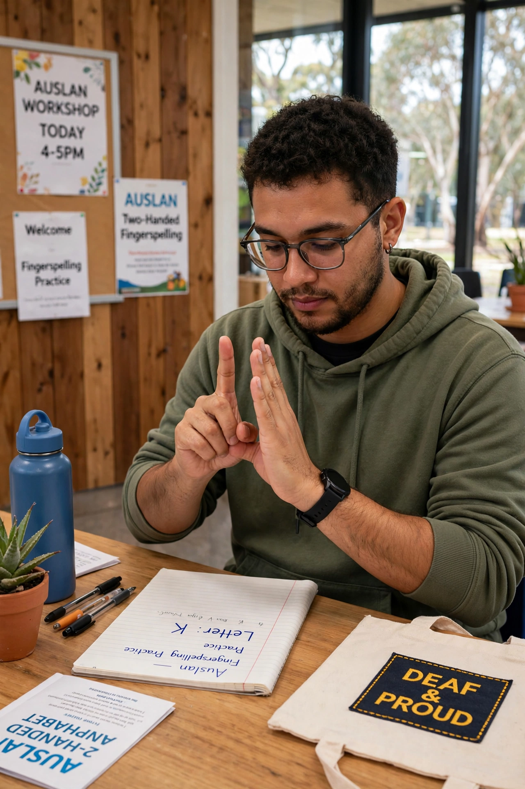

Auslan
| Auslan | |
|---|---|
| Native to | Australia |
| Signers | About 30,000 reported in the 2021 census (estimates vary) |
| Family | BANZSL (British, Australian and New Zealand Sign Language) |
| Manual alphabet | Two-handed (British-derived) |
| Official status | Recognised by the Australian government as a community language (1991) |

Auslan (/ˈɒzlæn/) is the sign language used by the majority of the Australian Deaf community. The term derives from "Australian Sign Language" and was coined by linguist Trevor Johnston in the early 1980s, although the language itself developed from sign languages brought to Australia by deaf immigrants from Britain and Ireland in the 19th century.
History and structure
Auslan belongs to the BANZSL family, sharing roots with British Sign Language (BSL) and New Zealand Sign Language, and like them uses a two-handed fingerspelling alphabet. It is a complete natural language with its own grammar, using handshape, orientation, location, movement and non-manual features (facial expression and body posture) to convey meaning. Historically it had northern and southern dialect differences — influenced by Irish Sign Language in some Catholic schools — which have levelled considerably with national media and mobility.
Status and use
Auslan was officially recognised by the Australian government in 1991 as "a community language distinct from English". It is taught in schools and universities, used with interpreters in courts, hospitals, news broadcasts and emergency announcements, and has a growing presence through televised interpreted briefings. There is no single written form; dictionaries such as Signs of Australia and the online Auslan Signbank document its vocabulary.
See also: British Sign Language · New Zealand Sign Language · Deaf culture